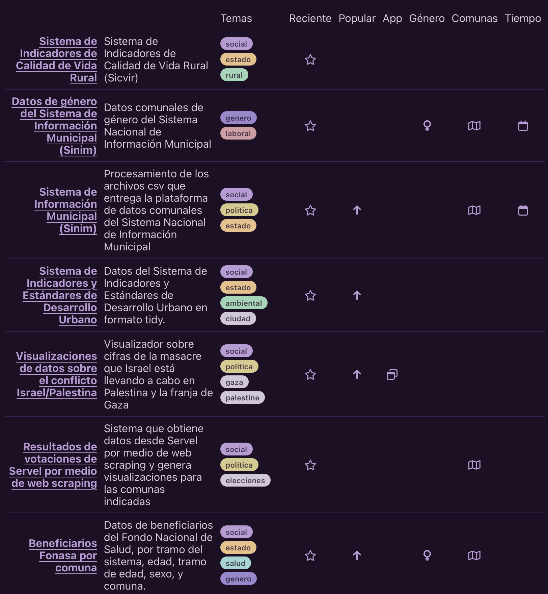

Repositorio de datos sociales
9/2/2025
Acabo de publicar una nueva página donde voy a estar recopilando todos los conjuntos de datos sociales con los que trabajo o he trabajado.
La idea de esta página es poder compartir fácilmente datos sociales sobre Chile que vienen limpios y procesados, para facilitar el trabajo de otras personas, y también ayudarles a aprender análisis de datos.
Se trata de una tabla que se genera automáticamente, la cual contiene una lista de repositorios enfocados en datos sociales, con clasificación según la temática del dato, y varias columnas que indican las características del conjunto de datos, como si es que el dato contiene variables de género, si está desagregado a nivel comunal, si existe una aplicación de visualización de datos asociada, la temporalidad (anual/mensual/semanal) de las observaciones, y más.
En cada repositorio se encuentran también scripts con el código que se utiliza para obtener los datos, procesarlos, limpiarlos, y también para generar nuevos productos a partir de estos datos, tales como gráficos, tablas, y aplicaciones.
La tabla se genera mediante un web scraping de mi cuenta de GitHub. Un script de web scraping en R navega por todos los repositorios de mi cuenta, y va obteniendo toda la información de cada uno de ellos. Los contenidos de la tabla se adaptan en base a las etiquetas que tiene cada repositorio, la descripción viene de la descripción de cada repo, y el título viene del readme. Las columnas con iconos también se hacen automáticamente a partir de las etiquetas. La tabla se genera con el paquete {gt}. La página se genera con Quarto y se publica automáticamente con GitHub Pages.
La conveniencia de este flujo de trabajo es que, por mi parte, solamente tengo que seguir subiendo repositorio, y solamente componerles las etiquetas y descripciones en GitHub, éste mini sitio se va a actualizar y reflejar la nueva información sin tener que hacer nada de trabajo extra.
Si quieres crear tú también un mini sitio basado en R y Quarto, puedes seguir este tutorial de Quarto que hice, donde enseño lo simple que es combinar las herramientas y librerías de R para personalizar y dar contenido a los documentos creados con Quarto, incluyendo reportes en HTML, sitios web y blogs.
- Fecha de publicación:
- February 9, 2025
- Extensión:
- 2 minute read, 368 words